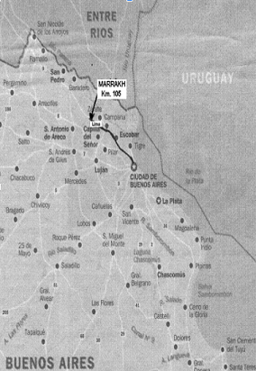

El establecimiento está inscrito en la Argentina como haras en el stud-book (registro de criadores) de la Asociación de Criadores de Caballos Árabes. Los caballos árabes criados en Marrakh son de sangre pura y se remontan a un noble árbol genealógico. En particular se remite aquí a los ejemplares de sangre polaca, descendientes de aquella caballería que con heroísmo pero sin sentido cargó contra la invasión de los tanques alemanes en 1939. Algunos padrillos y yeguas de este linaje cría fueron introducidos al país en el año 1962.Por su inteligencia, constancia, velocidad y resistencia, el caballo árabe es muy buscado para la equitación deportiva - ante todo para la especialidad del endurance.
